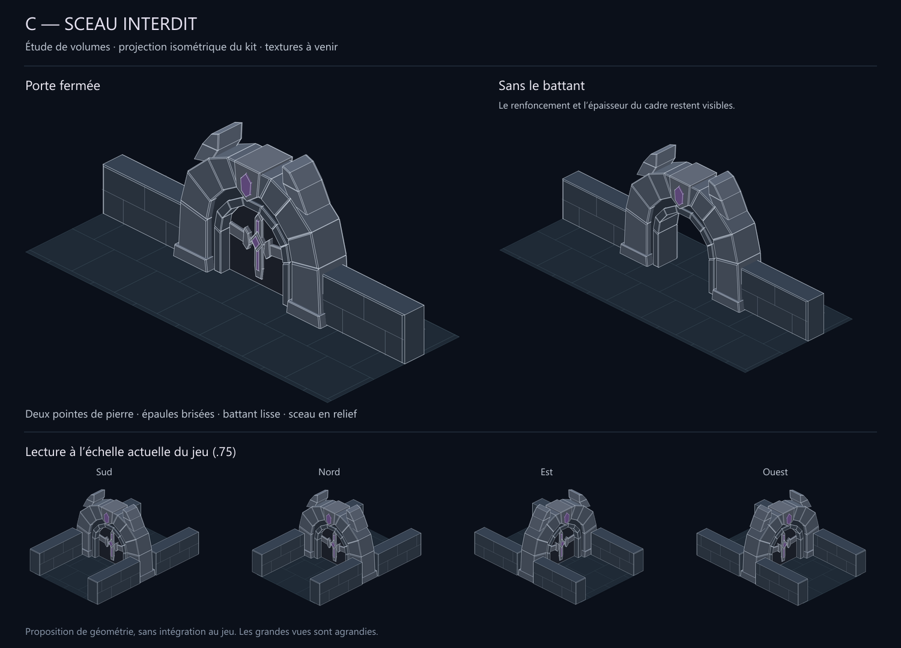
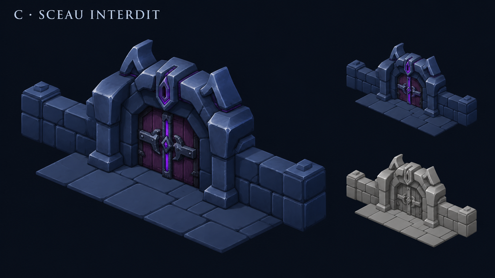

La direction C est retenue. Cette adaptation géométrique est proposée pour vérifier sa silhouette et son raccord aux murs. La porte en bois reste lisse ; seuls les volumes de pierre et les ferrures structurantes sont représentés. Le violet identifie le sceau, sans préjuger de sa future texture.
Revoir le concept sélectionné

Ouvrir la planche en taille réelle · Étude hors jeu, aucune modification des sprites de production.